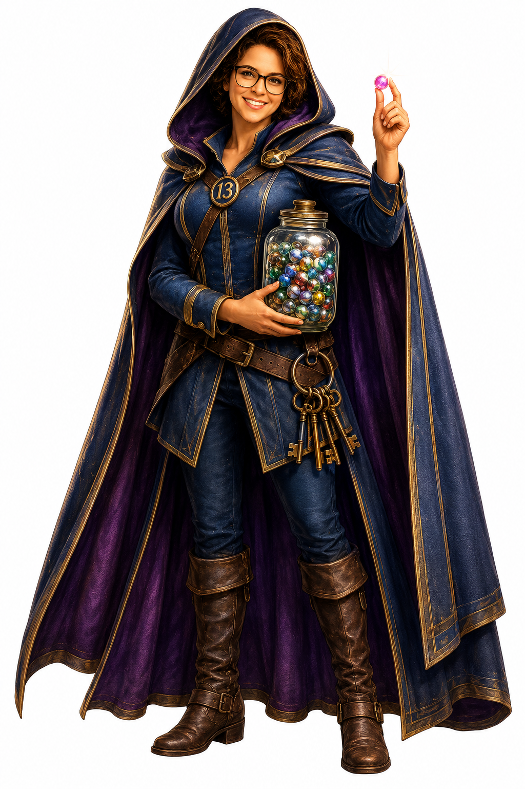

“Some people think my life went south.
I think it went everywhere.”
And that’s exactly why I can help almost any business owner who walks through my door. Follow the spiral — click a marble to hear that chapter.
I don’t sell bookkeeping.
I don’t sell AI.
I don’t sell payroll.
I help businesses see what they’ve been missing.
🔑 click to meet The Keeper

The Keeper
every marble, gathered · every chapter, a key